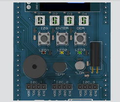
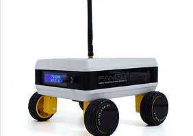
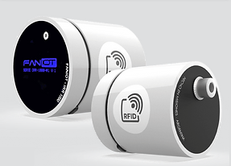

QWORK comercializa y distribuye soluciones de FANIOT, que es la Fabrica de Nano sensores & IOT (Misiones - Republica Argentina)
Kit Market IOT
El Kit incluye 3 (tres) Módulos Educativos FANIOT, que introducen al estudiante en los trabajos del futuro, vinculados a la Robótica y a la Programación.
- Son módulos encastrables que permiten al estudiante desarrollar diferentes proyectos alternando los módulos para lograr un proyecto tecnológico a la medida de sus necesidades, sin cables.
- Los Módulos Educativos FANIOT, introducen al Estudiante en los Trabajos del futuro, vinculados a la Robótica y a la Programación.

Módulo Interfaz funciona como interacción de usuarios, la cual posee una pantalla OLED, 3 pulsadores, 3 LEDs, 3 LEDs neopixels, un buzzer y sensores de temperatura y luz. Se utiliza en conjunto con el Módulo Base
Módulo Base está basado en el microcontrolador ESP32 de Espressif. Cuenta con conexión WiFi y Bluetooth, 20 entradas/salidas digitales, de las cuales 10 se pueden utilizar como entradas analógicas.
Módulo de Alimentación funciona como batería y se puede utilizar para alimentar los módulos del Kit Maker IOT y Kit Maker IOT PRO. Posee conexión para cargarse mediante paneles solares o un cargador USB de 5V.
FanBorg
Es un pequeño Vehículo Terreste no tripulado, capaz de mantener de manera autónoma un recorrido pre-programado.
Dispone de acceso directo a una App sin cargo, donde podés visualizar mediciones de los diferentes Sensores y Enviar comandos de Dirección, Velocidad y Geoposicionar el mismo

- Es compatible con módulos MP3, Mini AltaVoz, GPS, Cámara de fotos y videos. También con sensores para mediciones ambientales como temperatura, humedad, y luminosidad. Cuenta con Baterías de ION LITIO.
- Dispone de acceso directo a una App sin cargo, donde podés visualizar mediciones de los diferentes Sensores y Enviar comandos de Dirección, Velocidad y Geoposicionar el mismo.
- El Fanborg se puede programar en una interfaz gráfica de programación en Bloques y mediante Arduino IDE una aplicación multiplataforma para Windows, MacOS y Linux que permite escribir y cargar programas en placas compatibles con Arduino
- La integración de programación en gráfica y en código permite al estudiante abordar la programación en diferentes niveles, desde una interfaz amigable y sencilla, a una de características más avanzadas como Java y C++.
Sensores IOT
Soluciones para Ciudades Inteligentes y Educación Innovadora

- Termómetro Inteligente IRM - 100
Este integrante de la familia de Termómetros Infrarrojos inteligentes, posee un mango ergonómico para realizar mediciones instantáneas sobre objetos y personas. Comparte la precisión y calidad de los IR-1000 en un formato manual, fácil de transportar con pantalla OLED de alta definición que facilita la visualización de las mediciones.
- Sensores CO2 IOT / NDIR
Los CO2 Sensores IOT detectan altas concentraciones de CO2 en espacios cerrados, para evitar ambientes viciados y contribuir a la lucha contra el Covid-19.
- Los Sensores de CO2 incluyen una Aplicación Web que permite visualizar los datos obtenidos por los sensores, y realizar un seguimiento de las diferentes concentraciones de Dióxido de Carbono que se encuentran en el ambiente.